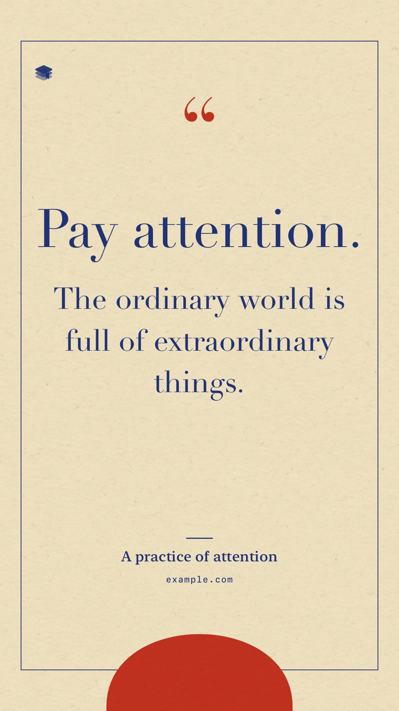
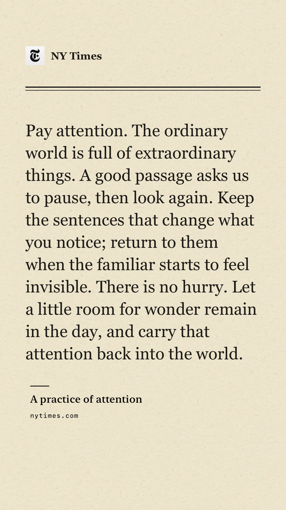
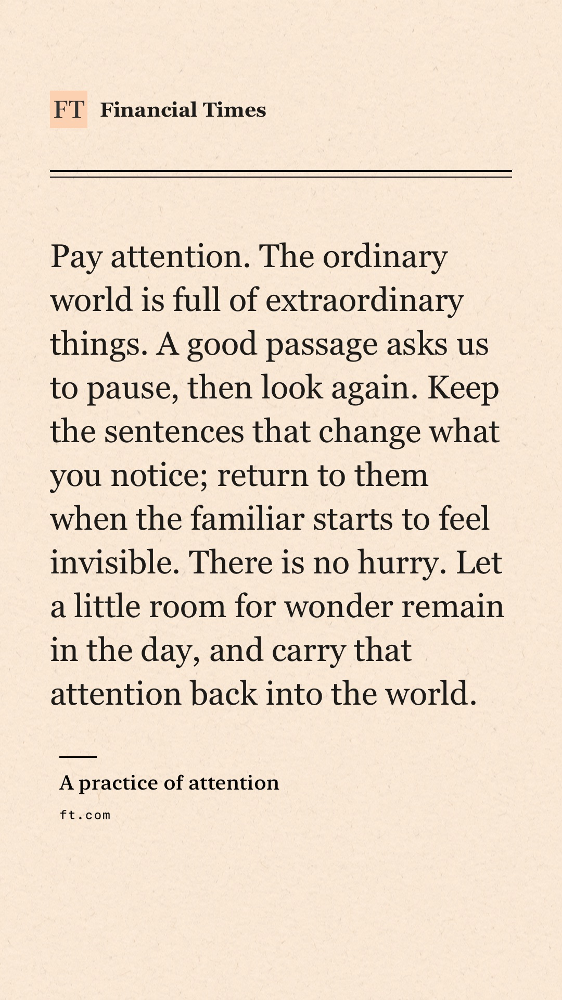
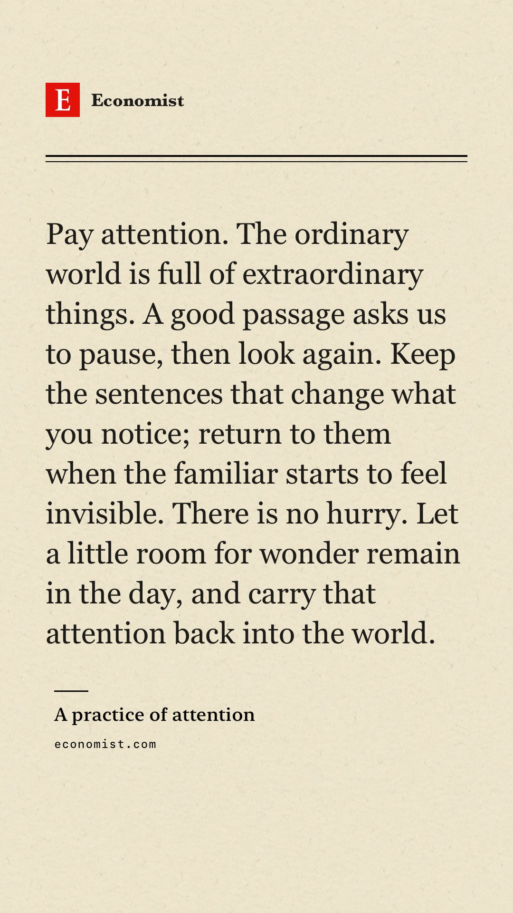
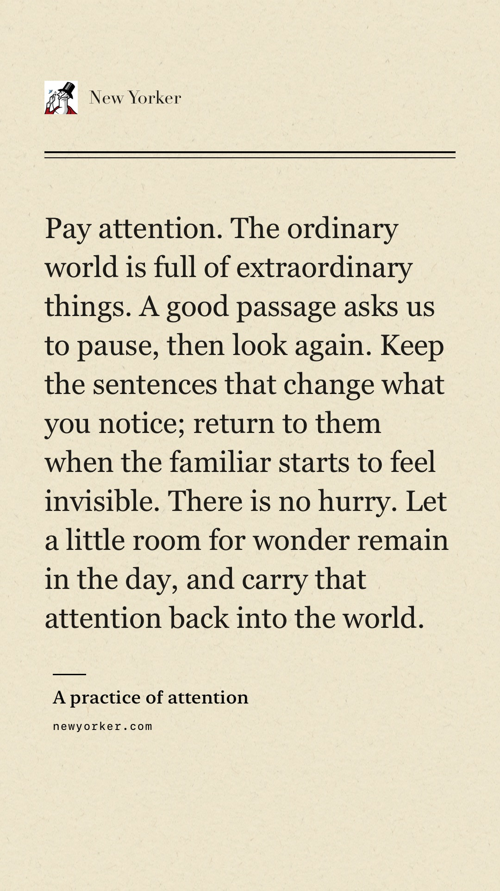
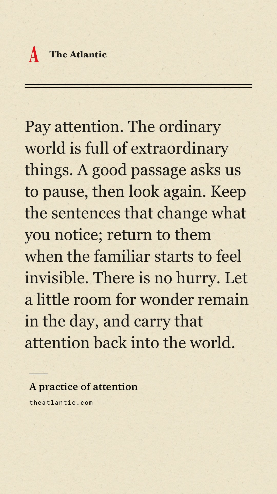
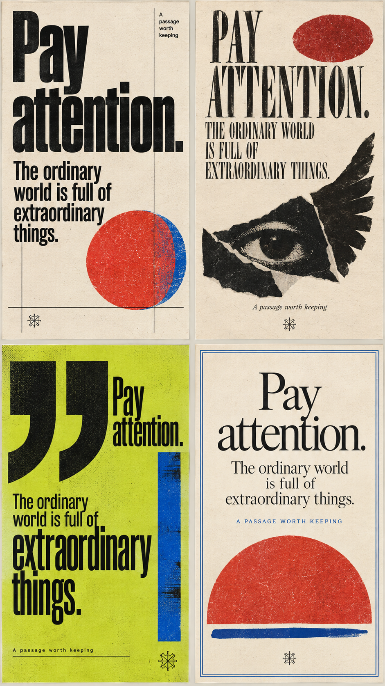
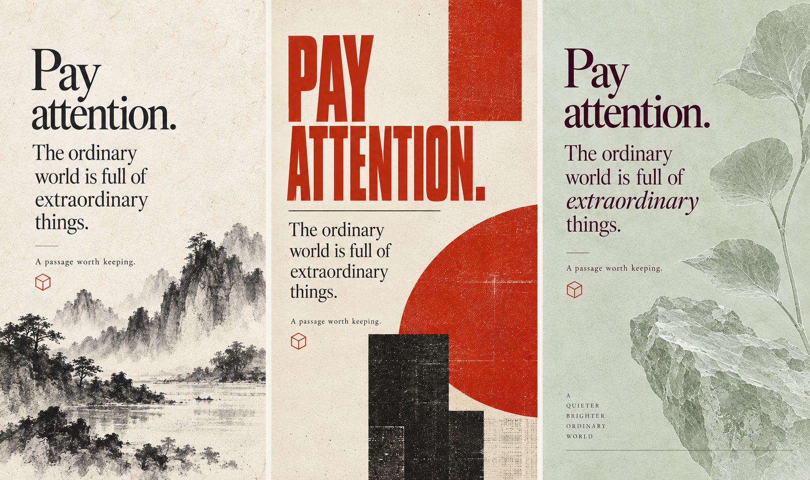
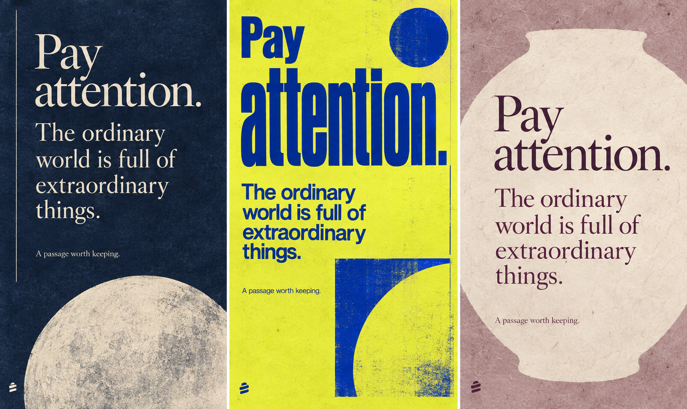

{kind=link}
{kind=link}
{kind=link}
{kind=link}
{kind=link}
{kind=link}
Let the words set the scale.
A short opening sentence can become a large headline. Longer passages use a measured body size and continue to another card. Source text stays quiet, separate and readable.
Twelve ways to give a thought a physical presence. Expressive type, imperfect ink, open paper. Three designer explorations distilled into real, editable-text sharing templates.

These are actual images from Arctic’s native renderer, not HTML approximations. Whole quote uses one image at a readable size. Paginated examples continue across cards. Article images are available in Biblioteca, Modern, Swiss, Offset and Newsprint; a shorter quote is used where the longer one cannot fit.
Open full-size export ↗Bundled publisher marks on real native exports. These are sample quotations, not publisher content. Installed serif fonts provide the pairing; proprietary newspaper fonts are not bundled.

NY Times
Financial Times
Economist
New Yorker
The AtlanticGenerated graphic studies informed the type scale, image placement and print materials. Quotes remain live text in the app.



A short opening sentence can become a large headline. Longer passages use a measured body size and continue to another card. Source text stays quiet, separate and readable.
Six local material assets carry paper fibres, ink wash, torn collage and translucent leaves. Vector motifs sit on the same substrate. Paper textures are local. Optional article images use the app’s thumbnail cache.
A torn eye, a circle of ink, a moon jar or a cropped typographic shape. The motif gives each template its character; the exact quote remains the primary content. Arctic signs with a tiny tinted icon.